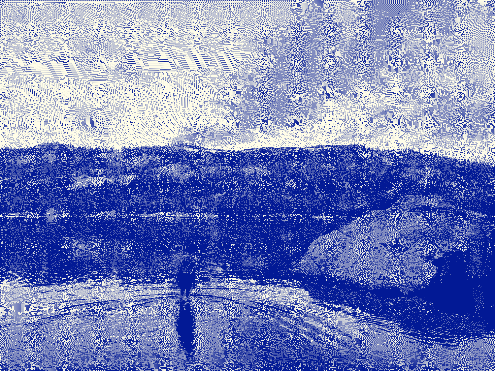
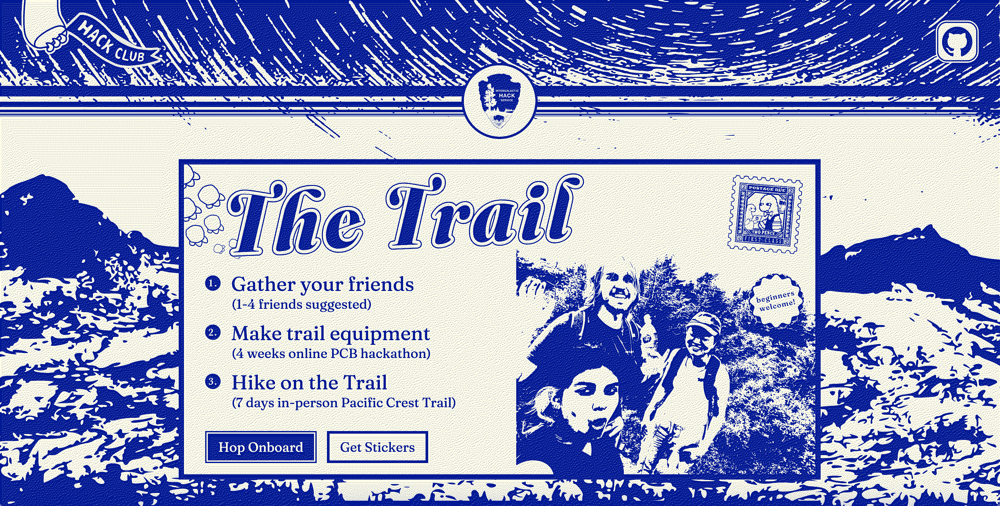
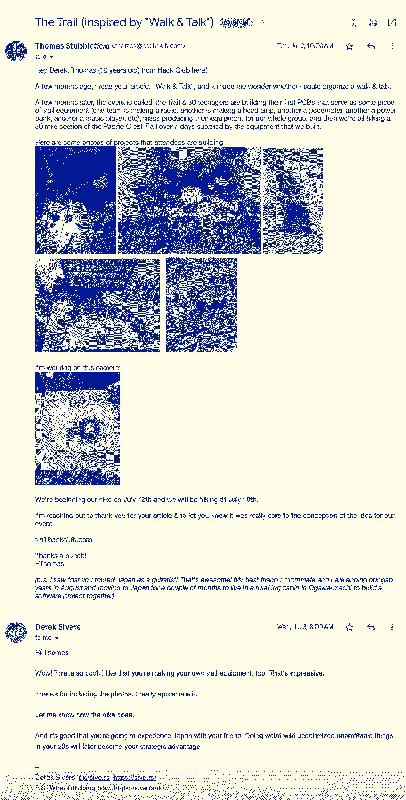
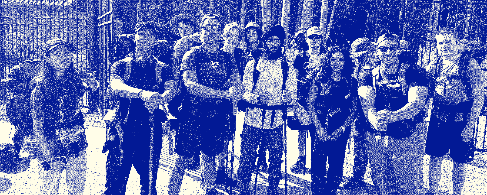
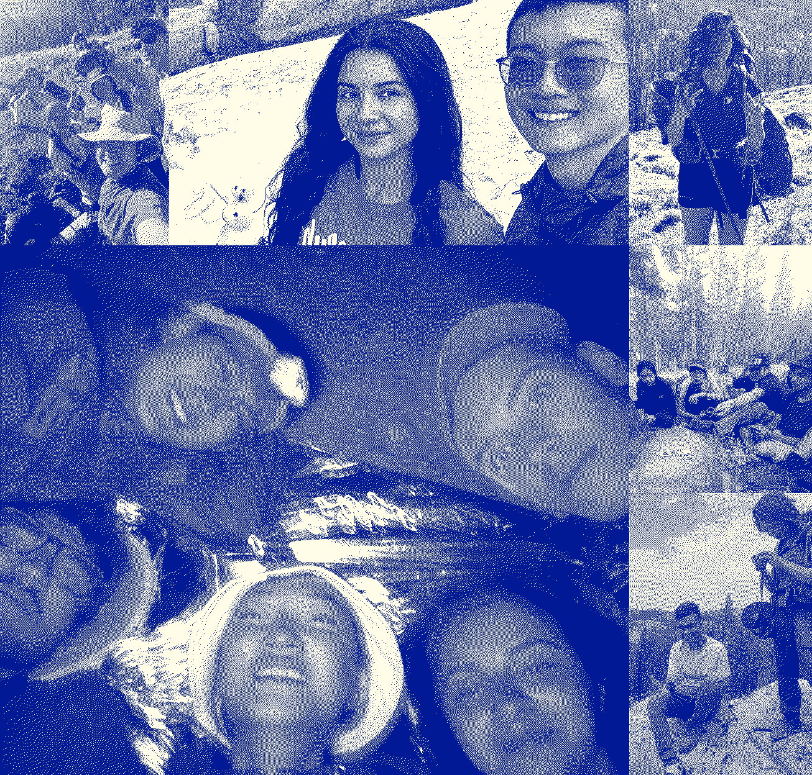

Home / Trail-The-Hardest-Thing-I've-Ever-Done
"LAAAKKEEEEEEE!!!!" - May & rest of Tail Trail group run into the water to escape the heat, sweaty smell, & the many mosquitoes. 
On December 12th, 2023, I got an email from Zach where he shared an article with me called Walk & Talk by Derek Sivers. He said it was a good read and that I would enjoy it. I read this article while I was organizing The Summit, and I thought it would be such a great adventure to one day have a Walk & Talk for clubs where we build our own devices & use them on The Trail.
After Summit, I was in a sauna near HQ using a free sauna pass offered by a nearby gym to Dieter, and I thought about how I could best use the final few months that I had left at Hack Club. I thought about how Epoch had been the greatest adventure that I had ever had and that I really matured through that event, and I wondered how I could create a similar sense of great adventure & growth for Hack Clubbers. I also thought of how during The Summer, most clubs die, but that I had an opportunity to make something this summer that would be so incredible that clubs decide to build an awesome project together over The Summer & continue weekly meetings even if it's logistically challenging. Hack Clubs are just groups of friends getting together building awesome projects (that's what I love most about Hack Club).
I had the idea to organize the world's first hikeathon: a 7-day trip along the Pacific Crest Trail where 30 Hack Clubbers were going to work with their friends to build their first PCB & then mass produce it for our entire hiking group. I really was not quite sure if it was possible. The next day, near the end of the day I was talking with Zach & I decided to pitch the idea on the spot (had not given it much more thought since the sauna). Zach came back with questions to which I responded on the spot with answers. I was upfront about the fact that I did not know anything about PCBs & I had never led a group hike before, but I think he saw at the time something I did not see which was that it made it a great story & it meant that I would be able to design the experience around other Hack Clubbers who had also never built a PCB before. He said to come back with a budget & we could talk it through more. I came with a budget & then we talked it through some more, and we ended the conversation with the budget approved & saying to go full steam ahead while acknowledging he needed to talk with Christina and that we may have to pull the plug if she isn't onboard (she was onboard!).
I immediately started trying to figure out how PCBs worked (after all, I'm organizing a whole event around it) & tried making my own Slack Emoji keyboard. At the same time, I was reaching out to mutual contacts through Hack Club of an electrical engineer expert who helps kids on Discord build their first PCBs. I got on a call with her and I explained the whole idea and she said no. She said it was not possible for 30 teenagers to make their own PCBs in this amount of time. She said that most wouldn't work & it would probably fail because 4-6 weeks was not enough time. She said our best bet would be to make one tutorial of how to make a radio and then have everyone make different variants of the same radio.
Hearing this from a PCB expert deeply concerned me. I did not want everyone to make the same project. That went deeply against my values as to the joy of making (going from an original idea to a hacky execution). I was talking about this with Mason at Namaste Kitchen & he said he knew a person at Champlain College who was a PCB god and that it was worth talking with her to hear her opinion. He reached out & she responded IMMEDIATELY saying she would love to meet up to discuss some ideas I had about a PCB event that I was organizing. Immediately after Namaste, we went to a Ben & Jerry's (the only "cafe-like" environment open at that hour in Burlington) & I went through the same list of 10 sample project ideas that I had shared with the electrical engineer. This time, my PCB expert said 7/10 of ideas were possible! I WAS ECSTATIC! YES, MY DREAM IS POSSIBLE!
We then recruited Nora onto the team as our resident PCB god as a part-time contractor to help people on The Trail with their projects. We then opened the flood gates with a kickoff video announcing The Trail to the Slack & in an email to every Hack Clubber. Here's that kickoff video:
Trail Kickoff Video
I also launched The Trail website which I designed to feel a bit rustic & antique: Trail Site
Hack Clubbers started talking with their friends & coming up with wild ideas for projects & submitting them to The Trail github repo. I decided to make a Trail Camera with Dieter.

Building PCBs is incredibly hard! Every week we had a Trail Call at 7:30 PM EST where we would work together into the night figuring out how to make our PCBs. Every step of it was a unique challenge, and even when the PCB arrived in the mail, that was just the beginning. Writing the software to make all of the components work together was a significant challenge on its own (combined with the fact that most of us made some amateur mistakes with our boards). Even with all of those troubles, Hack Clubbers were able to get through it & not give up when it was getting hard. They had to depend on each other's help, but they were able to in the end ship some amazing projects from a trail-radio messaging device to a gamified pedometer to a mini-computer to a music player. By the end, everyone was amazed by the product that they had made & they were incredibly grateful for the friends they made on the Slack who helped them get through it & get their PCB working.

So now we transition into the second part of The Trail which is hiking the PCT. I was talking with Nila once at City Market telling her the idea of The Trail & she told me that she led a hiking group in High School of about 50 people for her hiking club! When I heard that... I was like "WOW THAT IS GREAT!". That's how I found our first trail group leader. I decided we would split into three groups: the head, the body, and the tail, and that Nila would lead the head.
The second Trail group leader that I recruited was Max! I talked to Max early on when I was first starting the event to see if he was willing to be one of the group leaders. He had been to a ton of our past events and he was also just incredibly great with attendees. Unfortunately a few days before the event, Max had to pull out because his work with Arcade demanded that he stay in Vermont. We then reached out to Hunter (from HCB) & he became our second group leader! I feel a bit bad because we brought him on last minute and he would have had A LOT of useful insight if we had brought him in from the start. He is much more outdoorsy than I am and has much more wisdom about keeping kids safe in the woods. All that being said, he made it work even though he was given little notice and he led the body.
That leaves us with the tail. I gave myself the tail because I figured it would be the most difficult group to lead in that the members would likely have trouble motivating themselves because they're the group that had marked themselves as going the slowest (attendees picked their groups). Turns out: TAIL WAS SUPER FAST & MOTIVATED & my guess was totally wrong haha.
I think a big part of leadership is modeling behavior. Everyone in the group looks to you and the way you act & the vibes you give off heavily influence the way they act and the vibes they give off. If you're genuinely excited, all of the members of your group, team, or club will be genuinely excited.
We started booking everyone's flights once they shipped their projects and then I see that Amazon delayed our package with all of our supplies. In hindsight, relying on Amazon delivery estimates was not wise for such a crucial part of our event. I talked with Amazon for a long time, and then ultimately had to cancel the order and get all of the equipment the old-fashioned way through physical retail stores (half in Burlington & half in Reno). I then called Backpackers Pantry to ensure our food was going to arrive at the date they estimated (day before the event). They said no and that it would be 3 palletized freights that could not be delivered to the residential address. They had already worked with us to give us a large discount because we're a non-profit, so I was able to work with them some more to get them to cover the cost of over-nighting it with only one catch: I needed to find an address in Reno that was willing to accept my freight order into a loading dock. I called a bunch of warehouses & then called REI, and to my great joy REI agreed to accept our freight for us. I then talked with Backpackers Pantry & got them in contact with REI & they worked out all of the shipping logistics. I get a call next morning saying they're covering the cost of overnighting it and that they found a way to take it out of its initial boxes & freights to get it to fit in a residential address (so in the end REI wasn't necessary).
The morning after we arrive in Reno from a late-night flight, I wake up and then I get a message that the Airbnb that we were staying in that day with the 30 other attendees was cancelled last minute (same day). I call the owner of the Airbnb and find out he has another property of similar size, and then we book that one.
We book Ubers & then get everyone out of Reno to the Pacific Crest Trail.

Above you can see a photo of The Head as they're at the gate to the Trail head where they started their journey. The hike itself was the most physically challenging thing that I & most attendees have ever done in our lives.
It was a beautiful adventure & I think we all bonded deeply because of it. We went through hard times together (like the heat of traveling up steep mountains where one slip could lead to immediate doom) & great times (like running into the freezing cold lake and enjoying the feeling of the water washing off the dirt from the day).
The Tail was ferocious and ended up passing the body and at some sections part of the head. The Tail had great spirit & I feel super close with everyone who I shared that group with. We have some wild tales to tell..
Explore more of the Trail photos here: Trail Magic Photos 2024
We encountered many friendly people along The Trail who you can meet in The Trail documentary that is coming out soon on the Hack Club YouTube channel. Dieter did a great job filming the whole event traveling between the groups (at some point he got lost, but he found his way back to our group).
Organizing The Trail was definitely the hardest thing that I have ever done, but it is also the thing I am most proud of. I think everyone who went on The Trail was forever changed by the friendships they made and the realization that they were capable of doing really hard things if they acted with the three Trail values: kindness, gratitude, and confidence in themselves & those around them. Those three principles are what I aim to live my life by too. We had a couple rituals that I think made each day feel complete. We began the day with intention, sharing where we planned to travel that day. We ended the day with a positive story about one of our trail mates (showing gratitude for their kindness).